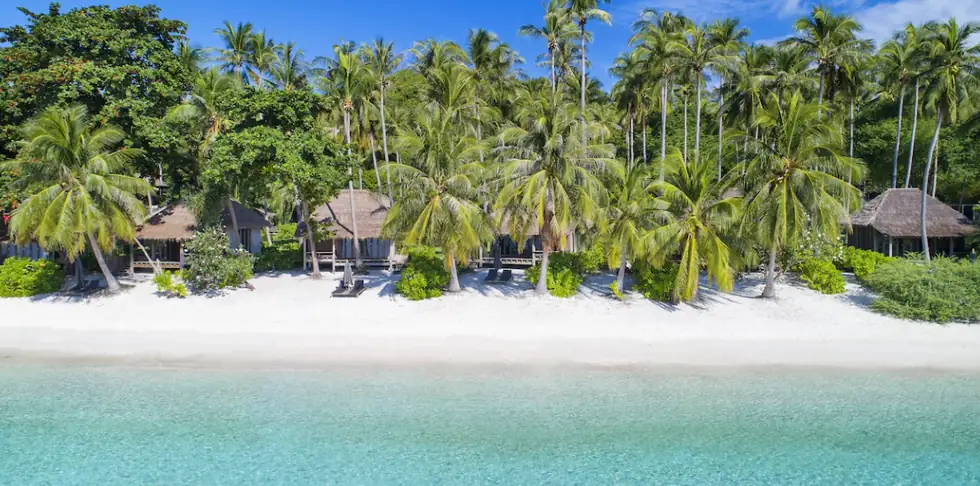
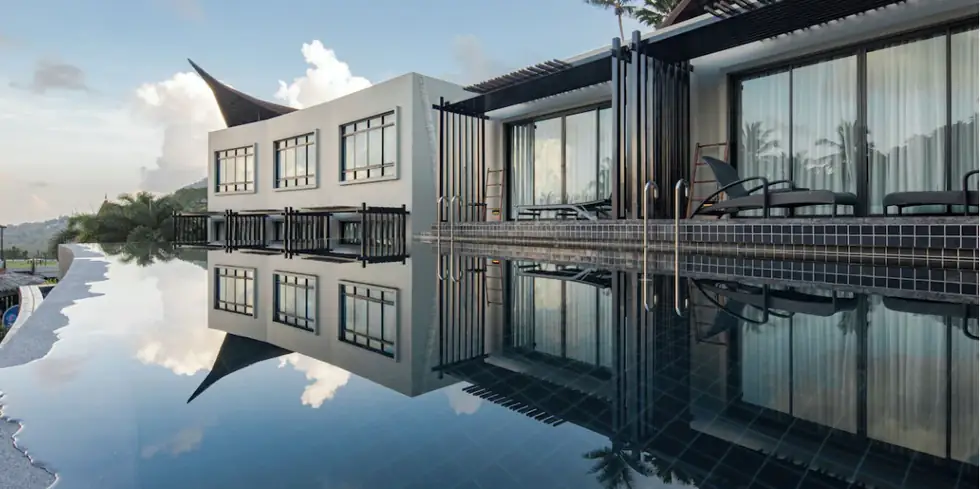
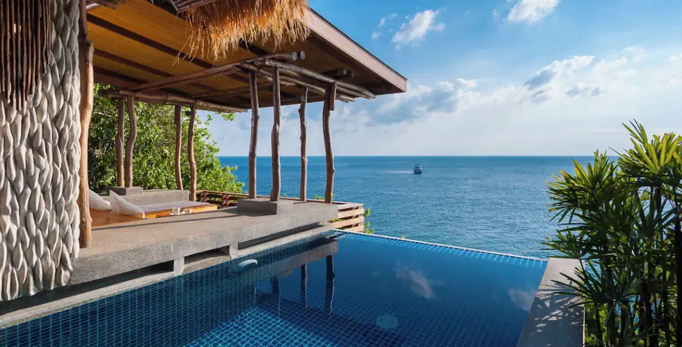

Passer best for
Snorkling og dykking
Liten tropeøy med klart vann, utsiktspunkter og korte avstander mellom buktene.
Samme ryddige oppsett som i resten av Thailand-guiden: områdevalg først, deretter hotell og opplevelser.
Snorkling og dykking
3-6 netter
Et rolig tempo
Velg base etter hva du vil bruke mest tid på. Da blir reisen enklere å planlegge.
Velg Sairee når dette området passer rytmen du vil ha på reisen.
Velg Chalok Baan Kao når dette området passer rytmen du vil ha på reisen.
Velg Shark Bay når dette området passer rytmen du vil ha på reisen.
Hotellkortene har samme størrelse på alle destinasjonssider. Pris og tilgjengelighet sjekkes hos hotellpartneren.

Et godt utgangspunkt for å sammenligne pris og tilgjengelighet.
Sjekk pris hos Hotels.com →
Et godt utgangspunkt for å sammenligne pris og tilgjengelighet.
Sjekk pris hos Hotels.com →
Et godt utgangspunkt for å sammenligne pris og tilgjengelighet.
Sjekk pris hos Hotels.com →
Et godt utgangspunkt for å sammenligne pris og tilgjengelighet.
Sjekk pris hos Hotels.com →
Et godt utgangspunkt for å sammenligne pris og tilgjengelighet.
Sjekk pris hos Hotels.com →
Et godt utgangspunkt for å sammenligne pris og tilgjengelighet.
Sjekk pris hos Hotels.com →Vil du se flere alternativer? Sammenlign flere hotell for Koh Tao.
Se flere hotellSett av tid til snorkling uten å fylle dagen med for mange planer.
Sett av tid til dykking uten å fylle dagen med for mange planer.
Sett av tid til viewpoints uten å fylle dagen med for mange planer.